M1 Patients & Dossier médical 7 spécimen(s)
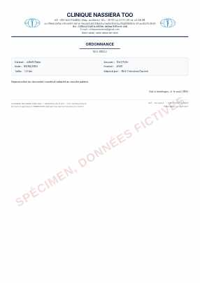
OrdonnanceA4 portrait · Documents numérisés
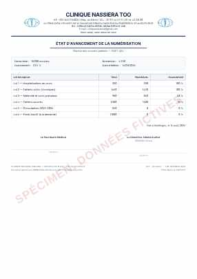
État d’avancement de la numérisationA4 portrait · Plan de numérisation
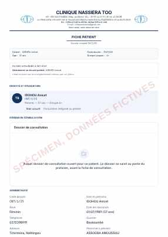
Fiche patientA4 portrait · Fiche patient
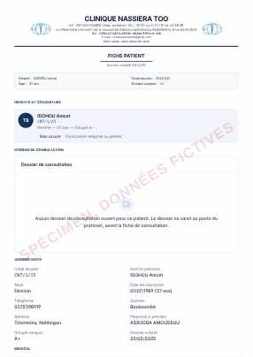
Fiche patientA4 portrait · Répertoire des patients
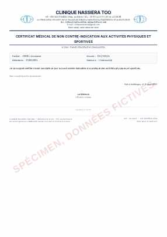
CERTIFICAT MÉDICAL DE NON CONTRE-INDICATION AUX ACTIVITÉS PHYSIQUES ET SPORTIVESA4 portrait · Certificats & attestations
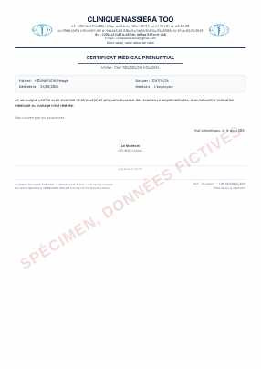
CERTIFICAT MÉDICAL PRÉNUPTIALA4 portrait · Certificats & attestations
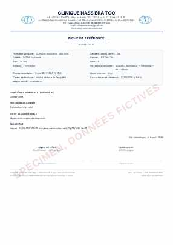
FICHE DE RÉFÉRENCEA4 portrait · Fiches de référence
M2 Consultations & prescriptions 3 spécimen(s)
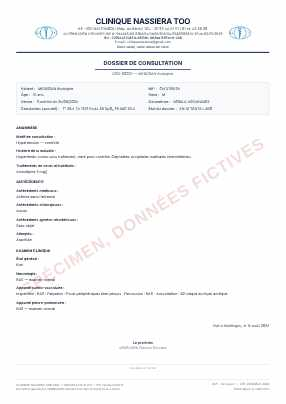
DOSSIER DE CONSULTATIONA4 portrait · Dossiers de consultation
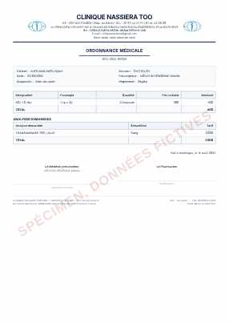
Ordonnance médicaleA4 portrait · Ordonnances
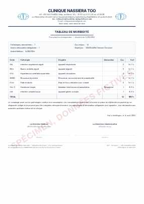
Tableau de morbiditéA4 portrait · Pathologies & morbidité
M2 Imagerie médicale 5 spécimen(s)
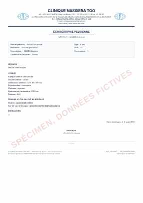
ÉCHOGRAPHIE PELVIENNEA4 portrait · Tableau Échographie
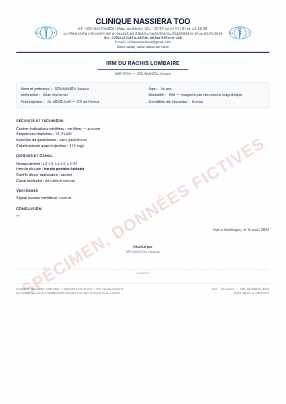
IRM DU RACHIS LOMBAIREA4 portrait · Tableau IRM
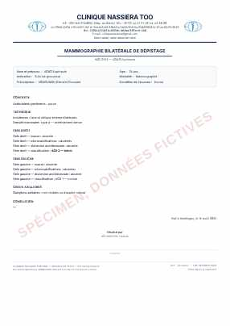
MAMMOGRAPHIE BILATÉRALE DE DÉPISTAGEA4 portrait · Tableau Mammographie
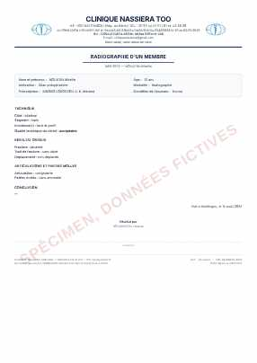
RADIOGRAPHIE D’UN MEMBREA4 portrait · Tableau Radiographie
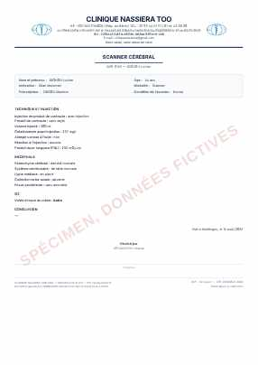
SCANNER CÉRÉBRALA4 portrait · Tableau Scanner
M2 RDV, Visites & Consultations 1 spécimen(s)
M3 Hospitalisation 12 spécimen(s)
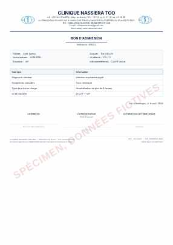
Bon d’admissionA4 portrait · Admissions
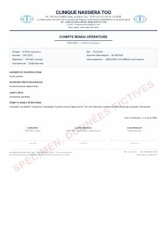
COMPTE RENDU OPÉRATOIREA4 portrait · Comptes rendus opératoires
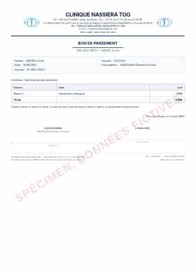
BON DE PANSEMENTA4 portrait · Bons de pansement
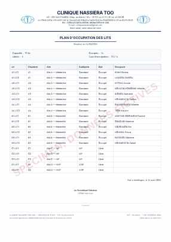
Plan d’occupation des litsA4 portrait · Chambres & lits
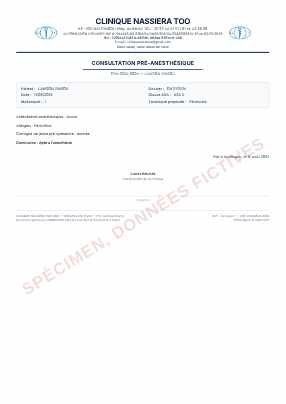
CONSULTATION PRÉ-ANESTHÉSIQUEA4 portrait · Consultation pré-anesthésique
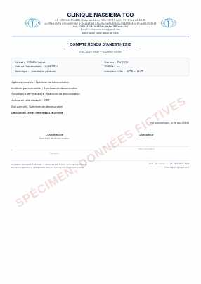
COMPTE RENDU D’ANESTHÉSIEA4 portrait · Comptes rendus d’anesthésie
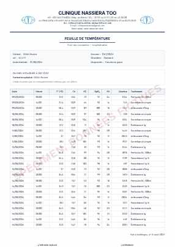
Feuille de températureA4 portrait · Feuille de température
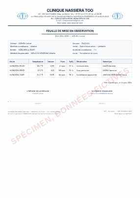
Feuille de mise en observationA4 portrait · Mise en observation
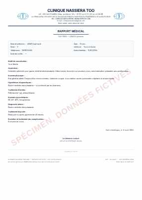
RAPPORT MÉDICALA4 portrait · Rapport médical
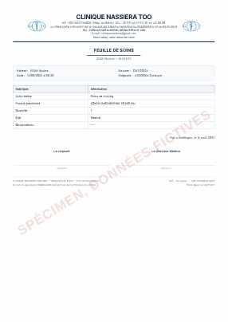
Feuille de soinsA4 portrait · Feuille de soins
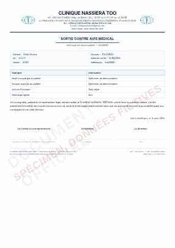
Sortie contre avis médicalA4 portrait · Sortie contre avis médical
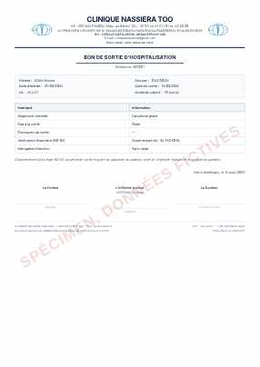
Bon de sortie d’hospitalisationA4 portrait · Sorties d’hospitalisation
M4 Maternité, Naissances & Décès 12 spécimen(s)
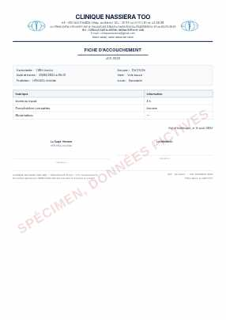
Fiche d’accouchementA4 portrait · Accouchements
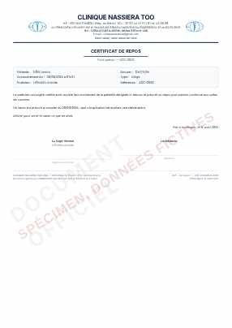
CERTIFICAT DE REPOSA4 portrait · Accouchements
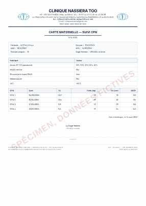
Carte maternelle — suivi CPNA4 portrait · CPN & carte maternelle
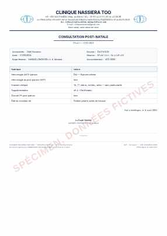
Consultation post-nataleA4 portrait · Consultations post-natales (CPoN)
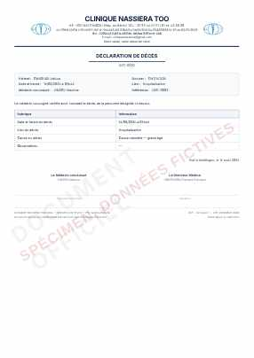
Déclaration de décèsA4 portrait · Registre des décès
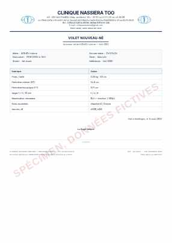
Volet nouveau-néA4 portrait · Dossier bébé & soins du nouveau-né
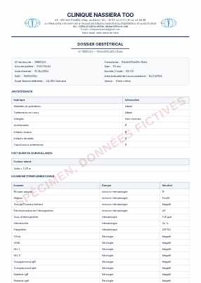
Dossier obstétricalA4 portrait · Dossier obstétrical
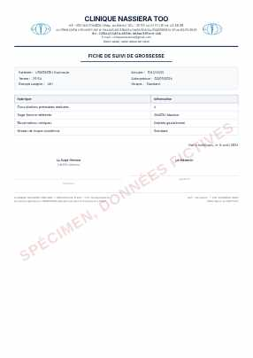
Fiche de suivi de grossesseA4 portrait · Suivi maternité
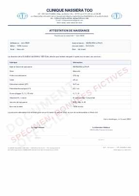
Attestation de naissanceA4 portrait · Registre des naissances
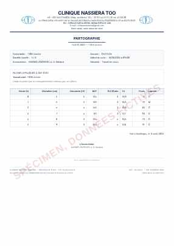
PARTOGRAPHIEA4 portrait · Partogramme
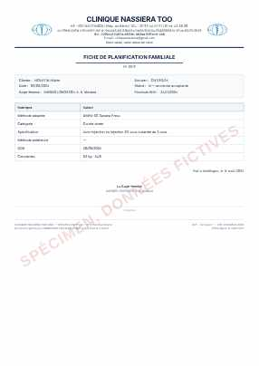
Fiche de planification familialeA4 portrait · Planification familiale
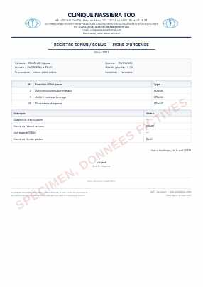
Registre SONUB / SONUC — fiche d’urgenceA4 portrait · Registre SONUB / SONUC
M5 Laboratoire 8 spécimen(s)
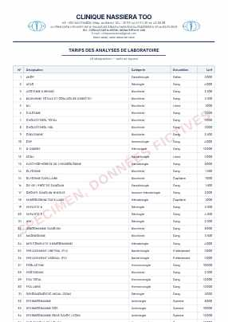
Tarifs des analyses de laboratoireA4 portrait · Catalogue des analyses
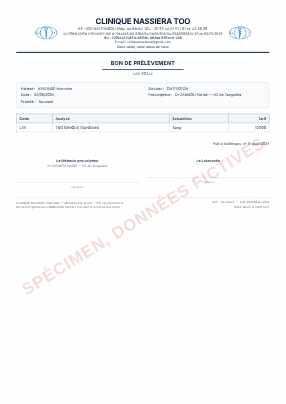
Bon de prélèvementA4 portrait · Demandes d’analyses
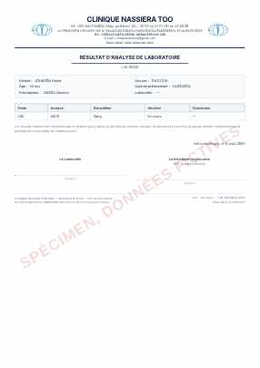
Résultat d’analyse de laboratoireA4 portrait · Impression des résultats
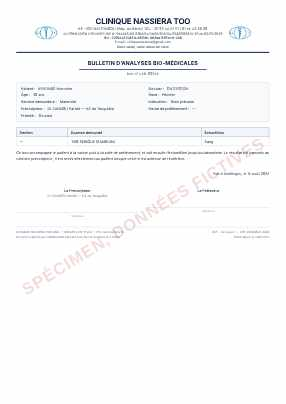
Bulletin d’analyses bio-médicalesA4 portrait · Salle de prélèvement
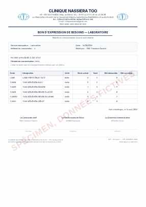
Bon d’expression de besoins — LaboratoireA4 portrait · Réactifs & consommables
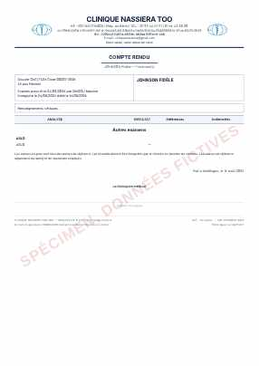
Compte renduA4 portrait · Saisie des résultats
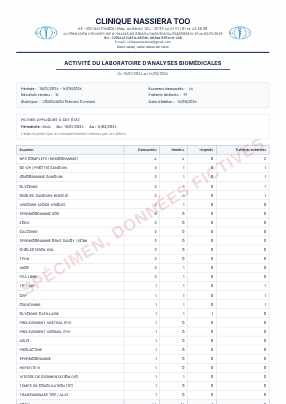
Activité du laboratoire d’analyses biomédicalesA4 portrait · Statistiques du laboratoire
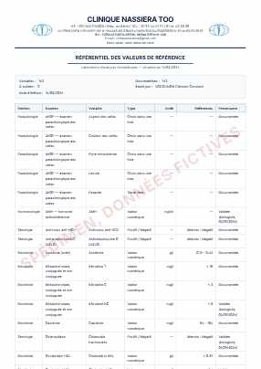
Référentiel des valeurs de référenceA4 portrait · Valeurs de référence
M6 Pharmacie & Stocks 14 spécimen(s)
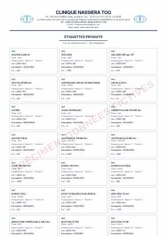
Étiquettes produitsA4 portrait · Étiquetage & emplacements
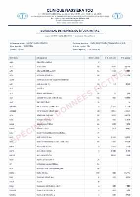
Bordereau de reprise du stock initialA4 portrait · Importation Grand Stock
État des produits périmésA4 portrait · Lots & péremptions (FEFO)
Fiche de lotA4 portrait · Lots & péremptions (FEFO)
Constat de pertes et cassesA4 portrait · Pertes, casses & rebuts
Stock restant à la pharmacieA4 portrait · Point du stock valorisé
Point détaillé des ventesA4 portrait · Suivi des ventes
Point global des ventesA4 portrait · Suivi des ventes
Fiche articleA4 portrait · Référentiel produits
État du stock détail (pharmacie d’urgence)A4 portrait · Stock détail (pharmacie)
État du stock gros (magasin central)A4 portrait · Stock gros (magasin)
Registre des transferts gros → détailA4 portrait · Transferts gros → détail
Bon de transfert de stockA4 portrait · Transferts gros → détail
État détaillé des articles transférésA4 portrait · Transferts gros → détail
M7 Achats & Fournisseurs 7 spécimen(s)
Bon d’expression de besoinsA4 portrait · Bons d’expression de besoins
Bon de commandeA4 portrait · Bons de commande
État des écarts de livraisonA4 portrait · Écarts de livraison
Fiche fournisseurA4 portrait · Fournisseurs
Bon de livraisonA4 portrait · Bons de livraison
PROCÈS-VERBAL DE RÉCEPTIONA4 portrait · PV de réception — consommables
PROCÈS-VERBAL DE RÉCEPTIONA4 portrait · PV de réception — réactifs
M8 Facturation & Caisse 9 spécimen(s)
État de caisse journalierA4 portrait · État de caisse journalier
Reçu de paiementA4 portrait · État de caisse journalier
Ticket de caisseticket 80 mm · Nouvelle facture
FACTURE D’AVOIRA4 portrait · Factures d’avoir
Facture normaliséeA4 portrait · Factures
Inventaire de caisse — journalièreA4 portrait · Opérations de caisse
Reçu de paiementA4 portrait · Paiements
État des recettesA4 portrait · Recettes par période
Facture normaliséeA4 portrait · Reliquats
M9 Assurances & Créances 10 spécimen(s)
Attestation de prise en chargeA4 portrait · Assurés & cartes
Fiche compagnie d’assuranceA4 portrait · Compagnies partenaires
assureursA4 portrait · Compagnies partenaires
Sélection — compagniesA4 portrait · Compagnies partenaires
Convention de prise en chargeA4 portrait · Conventions & garanties
État des créances — tiers payeursA4 portrait · Créances
FACTURE MÈRE — AFRICAINE DES ASSURANCESA4 portrait · Facture mère assurance
Relevé des prestations de la cliniqueA4 portrait · Factures mensuelles assureur
Facture — prestations de santéA4 portrait · Factures mensuelles assureur
Lettre de relanceA4 portrait · Relances
M10 Ressources humaines 22 spécimen(s)
État de la prise en charge du personnelA4 portrait · Assurance du personnel
Badge — DAKO Marcellecarte CR80 (recto et verso) · Badges du personnel
Badge — SOSSA Narcissecarte CR80 (recto et verso) · Planche d’impression des badges
Planche de badgesA4 portrait · Planche d’impression des badges
Décision de congéA4 portrait · Congés
Contrat de travailA4 portrait · Contrats
Fiche d’évaluation du mois de JUILLET 2026A4 portrait · Évaluations (NS 131)
Liste de collecte — participation du personnelA4 portrait · Événements du personnel
DESCRIPTION DE POSTEA4 portrait · Fiches de poste
Ordre de missionA4 portrait · Ordres de mission
État des participations du personnelA4 portrait · Frais de participation
Reçu de participationA4 portrait · Frais de participation
Fiche individuelle de l’agentA4 portrait · Personnel
Planning de garde et de permanenceA4 portrait · Planning & gardes
État de rémunération — prestataire externeA4 portrait · Prestataires externes
Note de service — primes diversesA4 portrait · Primes (NS 132)
État des primes diversesA4 portrait · Primes (NS 132)
Notification de sanctionA4 portrait · Sanctions
Planning des agents de sécurité et d’entretienA4 portrait · Sécurité & entretien
État des gardes effectuéesA4 portrait · Statistiques de garde
Statistiques des permanencesA4 portrait · Statistiques des permanences
Taux de présence par serviceA4 portrait · Taux de présence par service
M11 Paie & Primes 9 spécimen(s)
Demande d’avance sur salaireA4 portrait · Avances sur salaire
Journal de paieA4 portrait · Calcul de la paie
Bulletin de paieA4 portrait · Calcul de la paie
État de l’impôt sur les traitements et salairesA4 portrait · Cotisations CNSS / ITS / VPS
État des cotisations CNSSA4 portrait · Cotisations CNSS / ITS / VPS
État des redevances ORTBA4 portrait · Cotisations CNSS / ITS / VPS
État du versement patronal de solidaritéA4 portrait · Cotisations CNSS / ITS / VPS
État des redevances ORTBA4 portrait · Redevance ORTB
Journal de paie — validationA4 portrait · Validation Direction
M12 Comptabilité SYSCOHADA 23 spécimen(s)
Balance analytiqueA4 portrait · Comptabilité analytique
Balance générale des comptesA4 portrait · Balance générale & âgée
Balance âgée des comptes de tiersA4 portrait · Balance générale & âgée
État de rapprochement bancaireA4 portrait · Banques & rapprochements
Compte de résultat — exercice 2025A4 portrait · Baseline 2025
Compte de résultatA4 portrait · Compte de résultat
État des dépenses de trésorerieA4 portrait · Dépenses journalières
Pièce de dépenseA4 portrait · Dépenses journalières
Justificatif de paiement — obligation fiscaleA4 portrait · Échéances fiscales & paiements
BilanA4 portrait · États financiers
Compte de résultatA4 portrait · États financiers
Tableau des flux de trésorerieA4 portrait · États financiers
NOTE 11 : DISPONIBILITÉSA4 portrait · États financiers
Fiche de synthèse des principaux indicateurs financiersA4 portrait · États financiers
Tableau des flux de trésorerieA4 portrait · Tableau des flux de trésorerie
Grand livreA4 portrait · Grand livre
Grand livre généralA4 portrait · Grand livre
Fiche d’immobilisation & plan d’amortissementA4 portrait · Immobilisations & amortissements
Report des immobilisations à l’actif du bilanA4 portrait · Immobilisations & amortissements
Journal comptable — Journal des achatsA4 portrait · Journaux comptables
Bilan d’ouverture — à-nouveauxA4 portrait · Bilan d’ouverture & à-nouveaux
Plan comptable SYSCOHADAA4 portrait · Plan comptable OHADA
Seuil de rentabilitéA4 portrait · Seuil de rentabilité
M12 Gestion & trésorerie 2 spécimen(s)
Besoin en fonds de roulementA4 portrait · Besoin en fonds de roulement
Coût à l’activité — marge sur consommablesA4 portrait · Coût à l’activité
M13 Administration & Ambulance 6 spécimen(s)
Fiche d’intervention — ambulanceA4 portrait · Interventions ambulance
Registre du courrierA4 portrait · Courriers (départ / arrivée)
Fiche de courrierA4 portrait · Courriers (départ / arrivée)
Fiche d’équipementA4 portrait · Parc technique & maintenance
Plan annuel de travailA4 portrait · Plan annuel de travail
Convocation à une réunionA4 portrait · Réunions
M14 Sécurité & Utilisateurs 4 spécimen(s)
Journal d’auditA4 portrait · Journal d’audit
Matrice des droits d’accès (RBAC)A4 portrait · Rôles & permissions (RBAC)
Journal des sauvegardesA4 portrait · Sauvegardes & restauration
Fiche de compte utilisateurA4 portrait · Utilisateurs
CFG Configuration Clinique 5 spécimen(s)
Aperçu du papier à en-têteA4 portrait · Identité & papier à en-tête
Répartition des secteurs de la cliniqueA4 portrait · Organisation & organigramme
Organigramme de la Clinique NASSIERA TOOA4 portrait · Organisation & organigramme
Matrice de traçabilité des règles métierA4 portrait · Règles métier versionnées
Grille tarifaire des actes et prestationsA4 portrait · Référentiel tarifaire
DASH Tableaux de bord par poste 1 spécimen(s)
GED Gestion documentaire 2 spécimen(s)
Bordereau d’archivage documentaireA4 portrait · Archivage & conservation
Fiche documentaireA4 portrait · Bibliothèque documentaire
MECEF MECeF : Facture normalisée 2 spécimen(s)
Avoir sur facture normaliséeA4 portrait · Avoirs & annulations
Facture de vente — normaliséeA4 portrait · Factures normalisées
PIL Pilotage & analyse 3 spécimen(s)
Rapport d’activité — DirectionA4 portrait · Direction
Tableau de bord décisionnelA4 portrait · Tableau de bord décisionnel
Statistiques des hospitalisationsA4 portrait · Statistiques des hospitalisations